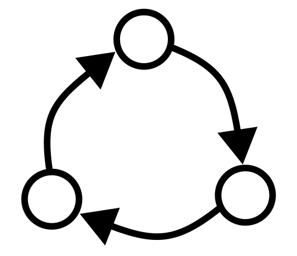

Intro to recurrent neural networks
Recurrent neural networks (RNNs) are useful models in both neuroscience and machine learning.
Architecture
RNNs consist of a collection of nodes \(1, \dots, N\), connected via a weight matrix \(W \in \mathbb{R}^{N \times N}\). The hidden state of individual neurons is \(\mathbf{h}_t\) and their activations \(\mathbf{r}_t = \phi(\mathbf{h}_t)\), where \(\phi\) is a nonlinearity such as a sigmoid or ReLU. Sometimes biases \(\mathbf{b} \in \mathbb{R}^N\) are also included.

Dynamics
A typical form for the dynamics of the neurons in the RNN is
\[\begin{split} \mathbf{h}_t & = \mathbf{h}_{t-1} + W\mathbf{r}_{t-1} + B\mathbf{u}_t, \\ \mathbf{r}_t & = \phi(\mathbf{h}_t) = \frac{1}{1 + \exp(-\mathbf{h}_t)}, \\ \end{split}\]
where \(\phi\) is applied element-wise, \(\mathbf{u}_t\) are external inputs and \(B: \mathbb{R}^{N_u} \to \mathbb{R}^N\).
Additional resources
You can read more about RNNs on the Wikipedia page.